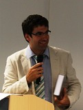
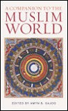

News Archive, 2009
 IIS Scholar Presents Paper at Conference on Islamic Philosophy
IIS Scholar Presents Paper at Conference on Islamic Philosophy December 2009
Dr Nader El-Bizri presented a paper titled: ‘Renewing the Impetus of Philosophical Thinking in Islam?’, at the international conference, Islamic Philosophy and the Challenges of the Present-Day World. The conference was held in Tehran and Hamedan, Iran, between 10th and 13th November 2009. More
 Alumni Chapter Group Meetings and Elections
Alumni Chapter Group Meetings and Elections December 2009
The annual meetings of all three Chapter Groups of the IIS Alumni Association were held during the past few months. Almost one hundred alumni attended the meetings, travelling from nine countries. More
 IIS Scholar Presents Paper at BASR Conference
IIS Scholar Presents Paper at BASR Conference November 2009
Stephen Burge, an IIS Research Associate, presented a paper at the Annual Conference of the British Association for the Study of Religions (BASR). The conference, which took place in Bangor, Wales from 7th to 9th September 2009, was called “Religion, Landscapes and other Uncertain Boundaries”. The attendees heard presentations on subjects ranging from Judaism to New Religious Movements, as well as a number of papers on themes in Islamic Studies. More
 IIS Scholar Investigates Perceptions of Youth in Northern Pakistan
IIS Scholar Investigates Perceptions of Youth in Northern Pakistan
October 2009
Dr Najam Abbas recently investigated Pakistani youth’s contribution to social transformation in the Northern Areas of Pakistan. During his month long fieldwork, Dr Abbas used questionnaires and focus groups to ask young people a series of questions, including whether they perceive themselves and those around them as happy, successful, optimistic or content. He contextualised these responses through interviews with local intellectuals, including educators, artists and writers. More
 IIS Publishes an Account of Imam-Caliph al-Mu‘izz’s Reign
IIS Publishes an Account of Imam-Caliph al-Mu‘izz’s Reign October 2009
The latest IIS publication, Towards a Shi‘i Mediterranean Empire: Fatimid Egypt and the Founding of Cairo, explores the reign of the fourth Fatimid Imam-caliph al-Mu‘izz li-din Allah (r. 953-975 CE), based on the only complete history of the Fatimids written by a mediaeval Sunni Muslim historian. The work by Dr Shainool Jiwa, provides a translation for the first time, of the writings of al-Maqrizi, a 15th century Mamluk scholar, on the reign of Imam-caliph al-Mu‘izz. More
 AKU-ISMC and AKF (UK) join IIS at Euston Road Premises
AKU-ISMC and AKF (UK) join IIS at Euston Road Premises October 2009
The Aga Khan University’s Institute for the Study of Muslim Civilisations (AKU-ISMC) co-located with the IIS at 210 Euston Road in July 2009. This followed the IIS’ move in January 2009 to these premises. AKF (UK) also took up residence in the building in early September 2009. More
 First Edition of Nasirian Ethics in Tajik Language
First Edition of Nasirian Ethics in Tajik Language September 2009
The Khujand State University in collaboration with The Institute of Ismaili Studies recently organised a book launch of Nasirian Ethics by Nasir ad-din Tusi, a celebrated 13th century Muslim scholar. The publication represents the first edition of the Nasirian Ethics in the Tajik language. More
 IIS Scholar Presents at International Symposium, Göttingen
IIS Scholar Presents at International Symposium, Göttingen September 2009
Dr Omar Alí-de-Unzaga, Coordinator of IIS’ Qur’anic Studies Unit, presented a paper on the concept of resurrection and the hereafter in the thought of the Pure Brethren or Ikhwan al-Safa' at an international symposium in Göttingen, Germany from 27 to 31 May, 2009. More
 IIS Welcomes Two New Co-Directors
IIS Welcomes Two New Co-Directors September 2009
The Board of the Institute of Ismaili Studies has announced the appointment of two Co-Directors, Dr Farhad Daftary and Professor Karim H Karim. They have assumed overall joint responsibility for leadership and management of the IIS. Their combined scholarship, skills and experiences will ensure that the IIS will continue to develop upon the excellent record it has established as a centre of scholarship and learning on Islam and Muslim societies. More
 The Summer Programme on Islam 2009
The Summer Programme on Islam 2009 August 2009
The ninth annual Summer Programme on Islam was held in the historic surroundings of Sidney Sussex College, University of Cambridge. Thirty-six participants from thirteen countries (Afghanistan, Angola, Canada, France, India, Iran, Kenya, Pakistan, Portugal, Syria, Tajikistan, UK and USA) participated in the eight-day programme. More
IIS Scholar Interviewed on BBC World Service
August 2009
Dr Omar Alí-de-Unzaga, Academic Co-ordinator of Qur’anic Studies, was recently interviewed for ‘Belief in a Golden Age’, a two-part series broadcast on the BBC World Service’s Heart and Soul programme. The series focused on Baghdad during its high point in the eighth and ninth centuries, when it was the capital city of the ‘Abbasid caliphate. More
August 2009
Dr Omar Alí-de-Unzaga, Academic Co-ordinator of Qur’anic Studies, was recently interviewed for ‘Belief in a Golden Age’, a two-part series broadcast on the BBC World Service’s Heart and Soul programme. The series focused on Baghdad during its high point in the eighth and ninth centuries, when it was the capital city of the ‘Abbasid caliphate. More
 Launch of The Ikhwan al-Safa’ and their Rasa’il
Launch of The Ikhwan al-Safa’ and their Rasa’il August 2009
The Ikhwan al-Safa’ and their Rasa’il: An Introduction, published by The Institute of Ismaili Studies, in association with Oxford University Press, was launched in Nairobi and Mombasa in June 2009. The events in Kenya, which marked the first worldwide launch of the publication, were attended by members of the local academic and Muslim communities. More
 Distinguished Historian Professor K. K. Aziz Passes Away
Distinguished Historian Professor K. K. Aziz Passes Away August 2009
Professor Khurshid Kamal Aziz, the distinguished Pakistani historian, passed away recently in Lahore after a short illness. Amongst his numerous acclaimed publications were works on important individuals who shaped the history of the sub-continent around the time of its partition, including books on Chaudhry Rahmat Ali, Syed Ameer Ali and His Highness Aga Khan III. More
Muslim Heritage Series Inaugurated by the IIS
July 2009
Author Interview with Dr Amyn B. Sajoo
With the publication of A Companion to the Muslim World, the IIS in association with I.B. Tauris (London), inaugurates a new series of publications on vital themes in Muslim civilisations. What distinguishes the ‘Muslim Heritage Series’ is not only the range of topics surveyed, but also its accessibility to a general public with an appetite for engaging writing in this field. More
July 2009
Author Interview with Dr Amyn B. Sajoo
With the publication of A Companion to the Muslim World, the IIS in association with I.B. Tauris (London), inaugurates a new series of publications on vital themes in Muslim civilisations. What distinguishes the ‘Muslim Heritage Series’ is not only the range of topics surveyed, but also its accessibility to a general public with an appetite for engaging writing in this field. More
 IIS Publishes Shahrastani’s Esoteric Commentary on Qur’an
IIS Publishes Shahrastani’s Esoteric Commentary on Qur’an July 2009
The Institute of Ismaili Studies is pleased to announce the publication of Keys to the Arcana: Shahrastani’s Esoteric Commentary on the Qur’an, translated by Dr Toby Mayer. This book, published in association with Oxford University Press, is part of the IIS’ Qur’anic Studies series, which aims to illustrate the rich diversity of approaches which have appealed to the Holy Qur’an throughout Muslim intellectual history. More
 Two Research Associates join IIS’ Qur’anic Studies Unit
Two Research Associates join IIS’ Qur’anic Studies Unit July 2009
The Institute of Ismaili Studies is delighted to welcome Nuha Al-Sha‘ar and Stephen Burge as Research Associates in the Qur’anic Studies Unit. Both new starters joined in June 2009. They are in the final year of their doctorate research, which they undertook at Fitzwilliam College, Cambridge, and the University of Edinburgh, respectively. More
 Omid Safi speaks on ‘The ethics of reform’
Omid Safi speaks on ‘The ethics of reform’ July 2009
Professor Omid Safi of the University of North Carolina, Chapel Hill, delivered the third lecture in the ‘Talking Ethics’ series at the IIS on 19 June 2009. What the Sufi tradition brings to the practice of Muslim ethics, Professor Safi argued, is a deep appreciation of the lived nature of what the Holy Qur’an and the Prophet taught. More
 Reza Masoudi Introduces Spatial Genealogy of the Ashura Ritual
Reza Masoudi Introduces Spatial Genealogy of the Ashura Ritual July 2009
Reza Masoudi Nejad gave a presentation on The Spatial Genealogy of the Ashura Ritual: an introduction on spatial evolution of Shi'i rituals at The Institute of Ismaili Studies on 2 June 2009. He has recently completed his PhD at The Bartlett, Faculty for the Built Environment at UCL. More
 In Memory of Peter Willey, Authority on Medieval Ismaili Castles
In Memory of Peter Willey, Authority on Medieval Ismaili Castles June 2009
The leading international authority on medieval Ismaili castles and fortresses, Peter Willey, died peacefully at his home near Pewsey in Wiltshire on 23 April 2009 at the age of 86 years. He is best known for his knowledge of the remote and virtually impregnable Ismaili castles in Iran and Syria, which he recorded in a series of articles and publications. More
 Professor Schoeberlein Presents Paper on Post-Soviet Islam
Professor Schoeberlein Presents Paper on Post-Soviet Islam June 2009
Professor John Schoeberlein gave a lecture on the Conceptual Challenges for the Study of Post-Soviet Islam at the IIS on 7 May 2009. Professor Schoeberlein is currently the Director for the Program on Central Asia and the Caucasus at Harvard University and has been studying and visiting Central Asia for over 20 years. More
 STEP Students Visit Cairo
STEP Students Visit Cairo May 2009
Students from the Class of 2010 of the Secondary Teacher Education Programme (STEP) recently returned from an educational tour of Cairo, Egypt. The visit was an essential component of the Religious Education and the Humanities in Secondary Education module, part of their double master’s degree programme. More
 IIS Scholar Speaks at a Conference in Cairo
IIS Scholar Speaks at a Conference in Cairo May 2009
Dr Reza-Shah Kazemi presented a paper at the conference: “Al Azhar and the West - Bridges of Dialogue”. Held in New Cairo from 3 to 5 January 2009, the conference was convened by the Rector of Al Azhar University, Dr. Ahmed Mohammed El Tayyeb. Muslim scholars in the West were invited to this conference to serve as "bridges of dialogue" by advising Al Azhar's scholars how to communicate Al Azhar's perspective within the norms of Western discourse. More
 Book Launch An Anthology of Qur’anic Commentaries
Book Launch An Anthology of Qur’anic Commentaries May 2009
An Anthology of Qur’anic Commentaries - Volume I: On the Nature of the Divine was launched at the Institute on 23 April, 2009. The book, published in association with Oxford University Press, is part of the IIS’ Qur’anic Studies series and aims to illustrate the wide ranging diversity of Qur’anic interpretations in the Muslim intellectual tradition. More
 IIS Seminar Discusses The Role of Ethics in International Conflicts
IIS Seminar Discusses The Role of Ethics in International Conflicts April 2009
Professor Mervyn Frost, Head of the Department of War Studies at King’s College, London, was the second guest speaker at the ‘Talking Ethics’ series held on 24 March 2009. Titled ‘Understanding contemporary conflict in ethical terms’, the talk argued that ethical discourse plays a pivotal role in how participants as well as observers frame their positions in conflict, regardless of the legal and political language that is used. More
 IIS Co-sponsors Conference on Art, Architecture and Shi‘ism
IIS Co-sponsors Conference on Art, Architecture and Shi‘ism April 2009
IIS and the British Museum co-sponsored the conference, People of the Prophet’s House: Art, Architecture and Shi‘ism in the Islamic World, which took place at the British Museum from 26th 28th March 2009. The conference was associated with the exhibition Shah ‘Abbas: The Remaking of Iran. More
 IIS Launches Two Recent Publications in Dubai
IIS Launches Two Recent Publications in Dubai April 2009
Two recent IIS publications were launched at the Ismaili Centre in Dubai. These included The Ismailis: An Illustrated History and An Anthology of Qur’anic Commentaries Vol. 1: On the Nature of the Divine. Held on 3 April 2009, the programme marked the Institute’s first major book launch in that region. More
 Dr Karen Bauer Presents Paper on “Tafsir and its Audience”
Dr Karen Bauer Presents Paper on “Tafsir and its Audience” April 2009
Dr Karen Bauer, Research Associate in the Institute’s Qur’anic Studies project, presented a paper at the American Oriental Society Conference, which took place 13-16 March 2009 in Albuquerque, New Mexico. Dr Bauer’s paper was entitled “Tafsir and its audience”. More
IIS Scholar Addresses Muslim Perspectives on Bioethics
April 2009
Dr. Amyn B. Sajoo was invited to speak on bioethical choices and Islam at a training session for clinicians, ethicists and counsellors, convened by the London Research Ethics Committees of the British National Health Service (NHS). Dr. Sajoo was among three scholars at the session, the others being Professors Daniel Sokol and Søren Holm, which was held in London on 19 March 2009 at the Royal Society of Medicine’s Chandos House. More
April 2009
Dr. Amyn B. Sajoo was invited to speak on bioethical choices and Islam at a training session for clinicians, ethicists and counsellors, convened by the London Research Ethics Committees of the British National Health Service (NHS). Dr. Sajoo was among three scholars at the session, the others being Professors Daniel Sokol and Søren Holm, which was held in London on 19 March 2009 at the Royal Society of Medicine’s Chandos House. More
 IIS Students Visit Spain as Part of their Course
IIS Students Visit Spain as Part of their Course March 2009
GPISH and STEP students from the Class of 2010 traveled to Spain for an educational visit in February and March, respectively. As part of their courses “Architecture of the Muslim World” (GPISH) and “Religious Education and the Humanities in Secondary Education” (STEP), the two groups visited some of the most notable sites of Granada, Cordoba and Malaga. More
 IIS Publishes An Anthology of Qur'anic Commentaries
IIS Publishes An Anthology of Qur'anic Commentaries March 2009
The Institute of Ismaili Studies in association with Oxford University Press is pleased to announce the publication of An Anthology of Qur'anic Commentaries - Volume I: On the Nature of the Divine. Edited by Feras Hamza, Sajjad Rizvi and Farhana Mayer, this anthology analyses the works of twenty selected Sunni, Shi‘i, Ibadi, Mu‘tazili and Sufi commentators on six different Qur'anic verses, revealing varied approaches to the scripture and its meaning. More
 IIS Publishes Work on Khutbas of Fatimid Caliphs
IIS Publishes Work on Khutbas of Fatimid Caliphs February 2009
The latest IIS publication, Orations of the Fatimid Caliphs: Festival Sermons of the Ismaili Imams by Paul Walker, is the tenth publication in the Ismaili Texts and Translations Series. The book presents texts of several sermons (khutbas) from the Fatimid period, in Arabic and in English translation. Covering a period of about 100 years, these texts provide unique access to a key component of Fatimid public discourse. More
 IIS Co-sponsors Workshop in Chicago on Tafsirs
IIS Co-sponsors Workshop in Chicago on Tafsirs January 2009
The IIS co-sponsored a workshop, held in conjunction with the American Academy of Religion (AAR), in Chicago, Illinois, in late October 2008. The workshop, a series of round-table discussions, focused on the subject of commentaries on the Qur’an. It brought together experts in the field of Qur’an commentaries with an audience of interested scholars. More
 IIS Scholar Presents Paper at a Conference on Fatimids
IIS Scholar Presents Paper at a Conference on Fatimids January 2009
Drs. Farhad Daftary and Shainool Jiwa participated in a conference on ‘The Fatimids and the Mediterranean’ organised by the Universita degli Studi di Palermo. The proceedings focussed on the social, cultural and political frameworks and institutions in the Muslim world as well as in the broader Mediterranean region during the Fatimid era. More
 The IIS Relocates to New Premises
The IIS Relocates to New Premises January 2009
The Institute of Ismaili Studies is moving to new leased premises, located at 210 Euston Road in Central London, as of January 2009. These new premises are substantial and offer the opportunity for co-location of the IIS, AKU-ISMC, and AKF (UK) in the same premises. More
 Gateways
Gateways